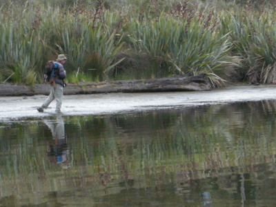
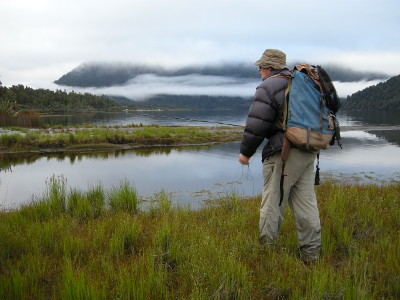
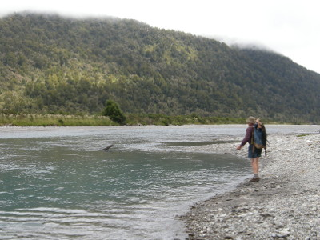
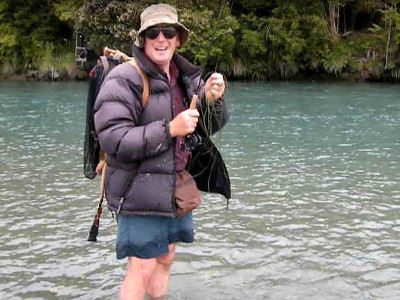
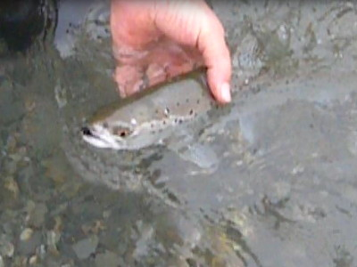

釣行日誌 ＮＺ編 「翡翠、黄金、そして銀塊」
再び湖へ
2010/12/01(WED)-1
今朝は６時に起きた。湯を沸かして紅茶を入れ、ビスケットで朝食とする。話好きなブリントさんが、ニュージーランドにおける輸入製品の四方山話をしてくれた。この国は農業と観光で成り立っていて、工業製品はあまり豊富でないので、身の回りには各国からの輸入製品が溢れているのだ。
朝食もそこそこに、二人で釣り支度を整え、湖のデッキへと続く小径を降りて行く。今朝は陸っぱりで水際を歩きながらブラウンを探すこととなった。

このところウェストランド地方には雨が少なく、この湖も水位がかなり低下していた。その結果、普段ならボートが無いと釣りにならないのだが、今は大きく湖岸が露出しており、水際を歩いて探れるのだ。嬉しいことに背後のスペースも十分ある。空は曇り気味であったが、風はなく湖面は静かで何とか鱒の姿を見つけられそうな気がした。
この間の夕間詰めに、サンドフライに邪魔されて大物を逃した小沢の入り江をブリントさんが攻めてゆく。必要以上に長いラインを出すことはせず、短めのキャストを繰り返して周辺を探って行く。熟練の技である。

２時間ほど二人で湖畔を探り歩いたのだが、ブリントさんが小さいのを１尾掛けてバレたのみに終わり、あまり期待が持てないようなので、ここでロッジに引き返して荷物を積み込み、ホキティカに帰る途上にある別の川を釣ることにした。マウンテンバイクで林道を走り、さらに辺境にある川へ行こうかと誘われたのだが、いささか今日の体力に自信が無かったので、せっかく準備してくれたブリントさんに申しわけ無かったが、お断りしてしまった。
ステートハイウェイ６号線を１時間ぐらい北上し、とある橋のたもとに車を停め、二人で河原へ続く土手を降りて行くと、おあつらえ向けの淵があった。ここから釣り始めることにして、二人でタックルを準備する。狙いは降海型のブラウンである。

上流に氷河があるらしく、この川の水は青白く冷たそうな色をしている。黒い小さなウーリーバガーとインターミディエイトのシンキングラインでブリントさんが深みを狙う。気温は上がっているので、シャツに短パンという気軽なスタイルであるが、バックパックはいつもの大型である。
ダウン・アンド・アクロスで釣り下り、かなり川幅が広い下流域まで来た。腿のあたりまで立ち込んで、対岸の深みを狙っていたブリントさんのロッドが高く掲げられた。どうやらヒットしたらしい。遠くからデジカメで撮していたのでズームで拡大すると、そんなに大きくはないらしく、ほとんどロッドが曲がっていない。ネットを使うまでもなく、ティペットを手繰り寄せて来ると、25cmほどのシーラン・ブラウンが銀白色の魚体をピシャリと跳ねて水しぶきを上げた。ピチピチと暴れる鱒を僕に見せながら、彼が
「 Yamame! 」
とおどけて声を上げた。この辺りから小型のブラウンが連続して反応するようになり、彼のロッドがコツンとかカクンとかいう感じで曲がるのが見えた。川底は砂地であまり障害物が無いので、小さなブラウンたちは対岸の水際に覆いかぶさっている樹木の根っこなどを隠れ家にしているように思われた。
と、今度はブリントさんのロッドがかなり曲がった。グングングンと連続して引き込んでゆく。カメラで撮影しながら近づき、熟練のファイトの方法を見学する。
「やったね～！」
「小さなシーランナーだ。でもけっこう強いぞこいつらは。とても強い！」
「スシにするにはちょうど良い大きさだ！ ハッハッハッ」

と彼が笑う。足元の浅場まで寄ってきた鱒は、なおも力を振り絞って抵抗を続ける。
「いや本当に強いな、この連中は！」
とうとう寄せられて来た鱒を、彼が優しくハンドランディングすると、黒いウーリーバガーをしっかりと咥えていた。目測37cmほどの銀白色の降海型ブラウンである。水に戻されると元気よく挨拶の飛沫を上げて去っていった。

釣行日誌ＮＺ編 目次へ
サイトマップ
ホームへ
お問い合わせ